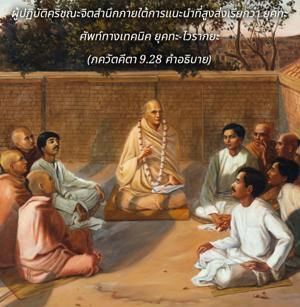

ในทางนี้เธอจะเป็นอิสระจากพันธนาการของงานรวมทั้งผลบุญและผลบาป ด้วยจิตใจที่ตั้งมั่นอยู่กับข้าในหลักแห่งการเสียสละนี้ เธอจะหลุดพ้นและมาหาข้า

ผู้ปฏิบัติกฺฤษฺณจิตสำนึกภายใต้การแนะนำที่สูงส่งเรียกว่า ยุกฺต ศัพท์ทางเทคนิค ยุกฺต-ไวราคฺย ซึ่ง รูป โคสฺวามี ได้อธิบายดังต่อไปนี้
อนาสกฺตสฺย วิษยานฺ
ยถารฺหมฺ อุปยุญฺชตห์
นิรฺพนฺธห์ กฺฤษฺณ-สมฺพนฺเธ
ยุกฺตํ ไวราคฺยมฺ อุจฺยเต
(ภกฺติ-รสามฺฤต-สินฺธุ 1.2.25)
รูป โคสฺวามี กล่าวว่าตราบใดที่เรายังอยู่ในโลกวัตถุเรายังต้องทำงาน เราไม่สามารถหยุดการกระทำได้ ดังนั้นหากการปฏิบัติงานยังดำเนินต่อไปและผลของงานถวายให้องค์กฺฤษฺณ เรียกว่า ยุกฺต-ไวราคฺย สถิตในการเสียสละอย่างแท้จริง กิจกรรมเช่นนี้จะทำให้กระจกแห่งดวงจิตใสสว่างขึ้น ขณะที่ผู้ปฏิบัติค่อยๆเจริญก้าวหน้าในความรู้แจ้งทิพย์จะศิโรราบโดยสมบูรณ์ต่อองค์ภควานฺและจะเป็นอิสรภาพในที่สุด ซึ่งได้ระบุไว้ว่าเมื่อเป็นอิสระแล้วจะไม่กลายมาเป็นหนึ่งเดียวกับ พฺรหฺม-โชฺยติรฺ แต่จะเข้าไปในโลกขององค์ภควานฺได้กล่าวไว้อย่างชัดเจน ณ ที่นี้ว่า มามฺ อุไปษฺยสิ “เขามาหาข้า” กลับคืนสู่เหย้าคืนสู่องค์ภควานฺ มีความหลุดพ้นที่แตกต่างกันอยู่ห้าระดับ ตรงนี้ระบุว่าสาวกผู้ใช้ชีวิตภายใต้คำสั่งสอนขององค์ภควานฺเสมอ ดังที่ได้กล่าวไว้ว่าได้พัฒนามาจนถึงจุดที่หลังจากออกจากร่างนี้ไปแล้วจะกลับคืนสู่เหย้า และปฏิบัติรับใช้โดยตรงอย่างใกล้ชิดกับองค์ภควานฺ
ผู้ใดที่ไม่มีความสนใจกับสิ่งอื่นใดนอกจากอุทิศชีวิตในการรับใช้องค์ภควานฺเป็น สนฺนฺยาสี ที่แท้จริง บุคคลเช่นนี้คิดว่าตนเองเป็นผู้รับใช้นิรันดร และจะขึ้นอยู่กับความปรารถนาสูงสุดขององค์ภควานฺ เช่นนี้ไม่ว่าทำอะไรเขาจะทำเพื่อประโยชน์ของพระองค์ ไม่ว่าปฏิบัติสิ่งใดเขาจะปฏิบัติเพื่อรับใช้พระองค์ และไม่ให้ความสนใจอย่างจริงจังกับกิจกรรมเพื่อผลทางวัตถุหรือหน้าที่ต่างๆที่กำหนดไว้ในคัมภีร์พระเวท สำหรับบุคคลทั่วไปจะมีข้อบังคับที่ต้องปฏิบัติตามหน้าที่ที่กำหนดไว้ในคัมภีร์พระเวท บางครั้งสาวกผู้บริสุทธิ์ปฏิบัติอย่างสมบูรณ์ในการรับใช้องค์ภควานฺอาจดูเหมือนว่าเขาฝืนต่อหน้าที่ที่กำหนดไว้ในคัมภีร์พระเวทแต่อันที่จริงมิได้เป็นเช่นนั้น
ดังนั้น ไวษฺณว ผู้เชื่อถือได้กล่าวไว้ว่า แม้บุคคลผู้มีปัญญามากที่สุดก็ไม่สามารถเข้าใจแผนและกิจกรรมของสาวกผู้บริสุทธ์คำเฉพาะที่ใช้คือ ตางฺร วากฺย, กฺริยา, มุทฺรา วิชฺเญห นา พุฌย ( ไจตนฺย-จริตามฺฤต, มธฺย 23.39) ผู้ที่ปฏิบัติในการรับใช้องค์ภควานฺเสมอ หรือคิดและวางแผนที่จะรับใช้พระองค์อยู่เสมอพิจารณาว่าเป็นผู้ที่มีอิสรภาพโดยสมบูรณ์ ทั้งในปัจจุบันและอนาคตการกลับคืนสู่เหย้าคืนสู่องค์ภควานฺเป็นที่รับประกัน เขาอยู่เหนือการวิจารณ์ทางวัตถุทั้งปวงเสมือนดังองค์กฺฤษฺณที่อยู่เหนือการวิจารณ์ใดๆทั้งหมด